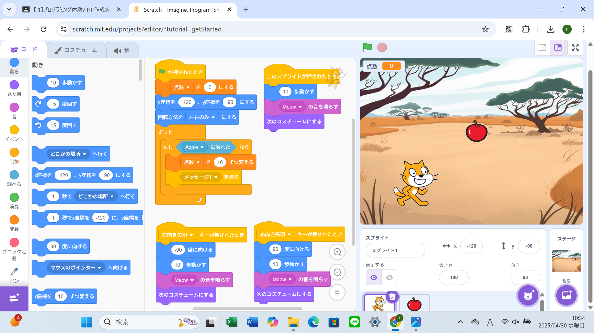

1-2 ゲーム

1.内容
ゲームプログラムで猫を移動させたり鳴き声を入れたりといった音の編集もできる。コスチュームも変えることができる。
それからリンゴを追加し猫がリンゴをつかむというゲームを作る。
リンゴの現れる位置や速さもランダムにしキャッチしたら点数が加算されていくように設定する。
背景を編集したら完成
2.感想
プログラミングをするのははじめてだったがゲームのプログラムを組み立てていくのは楽しかった。
今までやったことのあるようなゲームみたいな簡単なものだったが点数が加算されたりつかむような動きをするのが
こんな風に作られているのかと興味深く思った。